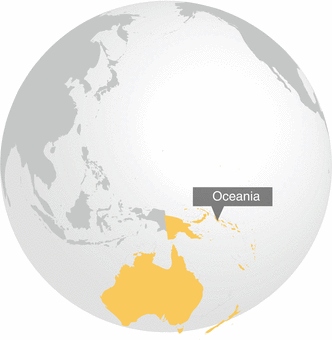

Oceania is defined by the United Nations as the islands within Polynesia, Micronesia and Melanesia, Australia and New Zealand. The islands in the Pacific Ocean were urbanized relatively recently (typically following independence in the latter half of the 1900s,) but has increased rapidly since the 1970s due to both high population growth rates and inward migration to the amenities of urban centers. In addition, changing economic realities associated with agriculture such as fewer rural jobs due to larger, more productive farms, makes it difficult for people to make a living in the rural areas. At the same time the greater provision of services in urban areas help attracting people to the cities.
Excluding the population of Papua New Guinea, more than half of all Pacific Islanders now live in urban areas. In some atoll states, urban growth has produced very high population densities, comparable to those in densely populated Asian cities. Many of these urban communities continue to lead subsistence lifestyles. This makes them particularly susceptible to ecological degradation resulting from catchment deforestation, pollution of shallow groundwater, and disposal of wastes on near-shore marine ecosystems.
Both Australia and New Zealand are highly urbanized, with over 85 % of their populations living in urban areas (World Factbook 2010a, b). However, the densities of their cities are relatively low by global comparisons. Further, Australia’s large land area and relatively small population size (22 million in 2012 (Index Mundi 2013)) makes it one of the world’s most sparsely populated countries, with fewer than three people per km2.
Presently urban areas in Oceania occupy 10,450 km2. This area is projected to double by 2030, with the majority of growth to be concentrating around existing urban centers. With many urban areas in New Zealand, Micronesia, Melanesia, and Polynesia positioned within biodiversity hotspots, this future urban growth is likely to have significant deleterious affects on biodiversity.
It is increasingly recognized that the impacts of urban growth and associated agricultural expansion on biodiversity need to be mitigated if ecosystem services generated by this biodiversity are to be maintained in the future (see Chap. 22). While the majority of ecosystem services research in Australia and New Zealand has focused on agroecosystems and farming practices, there is an increasing effort to understand the nature and role of ecosystem services in cities. In Pacific Island countries the major priority remains economic and social development. Nevertheless, there is growing regional recognition that maintaining the ecological support systems of vulnerable islands is essential to their sustainability.
References
CIA World Factbook. (2010a). Last checked 02 May 2013. https://www.cia.gov/library/publications/the-world-factbook/geos/as.html
CIA World Factbook. (2010b). Last checked 02 May 2013. https://www.cia.gov/library/publications/the-world-factbook/geos/nz.html
Index Mundi. (2013). Last checked 30 Apr 2013. http://www.indexmundi.com/australia/population.html